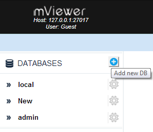
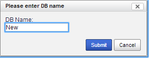
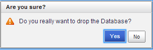

Add a database
- In the left sidebar, click the
 button. See Figure below.
button. See Figure below.

- Type the new database name as shown.
- Click Submit. See Figure below.

Delete a database
- Hover on the database name. A menu displays.
- Click Drop Database. See Figure below.

A confirmation window displays.See Figure below.

- Click Yes
The page refreshes and a confirmation screen indicating successful deletion of database displays.
See figure below.

View Database Statistics
- Select the desired Database name to view the statistics.
- Hover on the Database name alternatively.
- From the menu, click Statistics
The statistics of the Database display. See Figure below.

previousnext